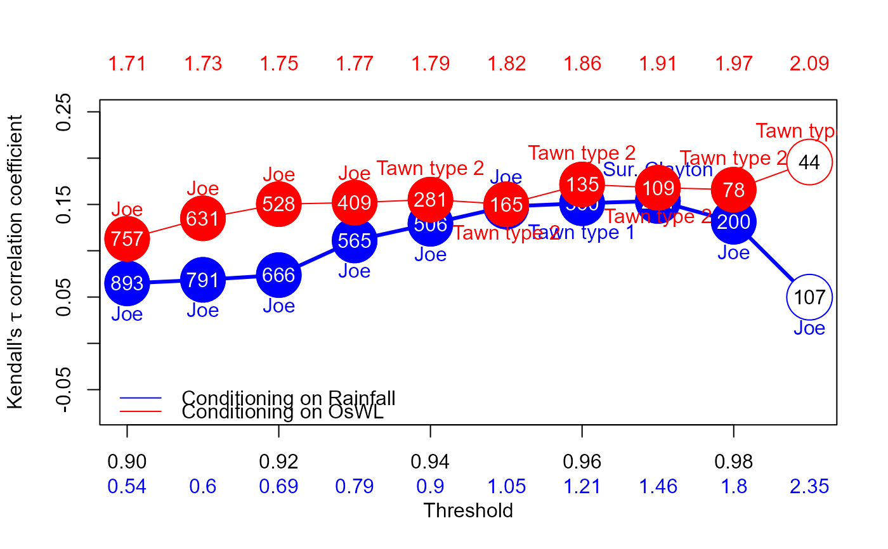

Copula Selection With threshold 2D - Fit
Copula_Threshold_2D.RdDeclustered excesses of a (conditioning) variable are paired with co-occurences of the other variable before the best fitting bivariate copula is selected, using BiCopSelect function in the VineCopula package, for a single or range of thresholds. The procedure is automatically repeated with the variables switched.
Arguments
- Data_Detrend
Data frame containing two at least partially concurrent time series, detrended if necessary. Time steps must be equally spaced, with missing values assigned
NA.- Data_Declust
Data frame containing two (independently) declustered at least partially concurrent time series. Time steps must be equally spaced, with missing values assigned
NA.- u1
A single or sequence of thresholds, given as a quantile of the observations of the variable in the first column of
Data_Detrendwhen it is used as the conditioning variable. Default, sequence from0.9to0.99at intervals of0.01.- u2
A single or sequence of thresholds, given as a quantile of the observations of the variable in the second column of
Data_Detrendwhen it is used as the conditioning variable. Default, sequence from0.9to0.99at intervals of0.01.- PLOT
Logical; whether to plot the results. Default is
"TRUE".- x_lim_min
Numeric vector of length one specifying x-axis minimum. Default is
NA.- x_lim_max
Numeric vector of length one specifying x-axis maximum. Default is
NA.- y_lim_min
Numeric vector of length one specifying y-axis minimum. Default
-1.0.- y_lim_max
Numeric vector of length one specifying y-axis maximum. Default
1.0.- Upper
Numeric vector specifying the element number of the
u1argument for which the copula family name label to appear above the corresponding point on the Kendall's tau coefficient vs threshold plot, when conditioning on the variable in column 1. Default isNA.- Lower
Numeric vector specifying the element number of the
u2argument for which the copula family name label to appear below the corresponding point on the Kendall's tau coefficient vs threshold plot, when conditioning on the variable in column 2. Default isNA.- GAP
Numeric vector of length one specifying the distance above or below the copula family name label appears the corresponding point on the Kendall's tau coefficient vs threshold plot. Default is
0.05.- Legend
Logic vector of length one specifying whether a legend should be plotted. Default is
TRUE.- Cex_Legend
Numeric vector of length one specifying the font size of the legend. Default is
1.- Cex_Axis
Numeric vector of length one specifying the font size of the axes. Default is
1.- Cex_Axis_Original
Numeric vector of length one specifying the font size of the values of the quantiles on the original (data) scale (i.e. second x-axis). Default is
1.
Value
List comprising:
Kendalls_Tau1Kendall's tau of a samplep_value_Var1p-value when testing the null hypothesisH_0: tau=0i.e. that there is no correlation between the variablesN_Var1Size of the datasetCopula_Family_Var1Best fitting copula for the specified thresholds
when the dataset is conditioned on the variable in column 1.
Analogous vectors Kendalls_Tau2,p_value_Var2, N_Var2 and Copula_Family_Var2 for the specified thresholds when the data set is conditioned on the variable in column 2.
If PLOT=TRUE then a plot of the Kendall's tau correlation coefficient versus quantile threshold is also returned.
Filled circles denote statistically significant correlation at a 5% significance level. Numbers inside the circles correspond to the sample size while the best fitting copula family is printed above.
Numbers below x-axis are the values of the corresponding quantiles on the original (data) scale.
Examples
Copula_Threshold_2D(Data_Detrend=S20.Detrend.df[,-c(1,4)],
Data_Declust=S20.Detrend.Declustered.df[,-c(1,4)],
y_lim_min=-0.075, y_lim_max =0.25,
Upper=c(6,8), Lower=c(6,8),GAP=0.1)

#> $Kendalls_Tau1
#> [1] 0.06479359 0.06860765 0.07371019 0.11110066 0.12911627 0.14775753
#> [7] 0.15130948 0.15374690 0.13131822 0.04985431
#>
#> $p_value_Var1
#> [1] 3.884024e-03 4.005171e-03 4.553886e-03 8.190472e-05 1.490773e-05
#> [6] 5.652147e-06 1.912140e-05 1.168721e-04 5.885795e-03 4.477170e-01
#>
#> $N_Var1
#> [1] 893 791 666 565 506 425 360 284 200 107
#>
#> $Copula_Family_Var1
#> [1] 6 6 6 6 6 6 104 13 6 6
#>
#> $Kendalls_Tau2
#> [1] 0.1128788 0.1350298 0.1503598 0.1520184 0.1552598 0.1501696 0.1716037
#> [8] 0.1680812 0.1659853 0.1958115
#>
#> $p_value_Var2
#> [1] 2.152234e-05 3.359236e-06 2.024925e-06 2.184300e-05 2.924678e-04
#> [6] 6.867621e-03 5.179888e-03 1.394853e-02 4.009364e-02 7.008091e-02
#>
#> $N_Var2
#> [1] 757 631 528 409 281 165 135 109 78 44
#>
#> $Copula_Family_Var2
#> [1] 6 6 6 6 204 204 204 204 204 204
#>